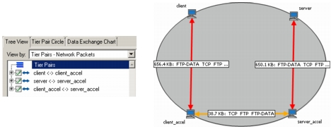

Verifying a WAN Acceleration Import After importing capture data into Transaction Analyzer, it is good practice to verify that the resulting Transaction Analyzer model is accurate. Specifically, verify the following: 1) There is no direct communication between end tiers across the WAN; all traffic is exchanged through the accelerators. 2) The end-points of each connection are meaningful and expected. For example, there are no connections with the same tier at both ends. 3) The Tree View and Tier Pair Circle pages do not show any unexpected tier pairs (that is, tier pairs that did not actually exchange traffic in the operational network). The following figure shows a WAN-accelerated application after a successful import. Note that the client and server do not exchange traffic directly, the connections are expected, and there are no unexpected tier pairs exchanging traffic (for example, between the client and the server-side accelerator). Figure 12-1 WAN-Accelerated Application in Transaction Analyzer  If you do not see expected results after an import, see Troubleshooting WAN Acceleration Imports.